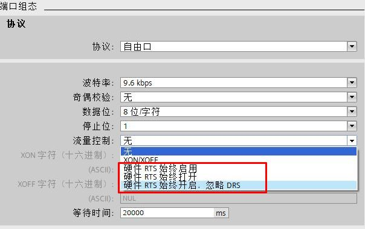
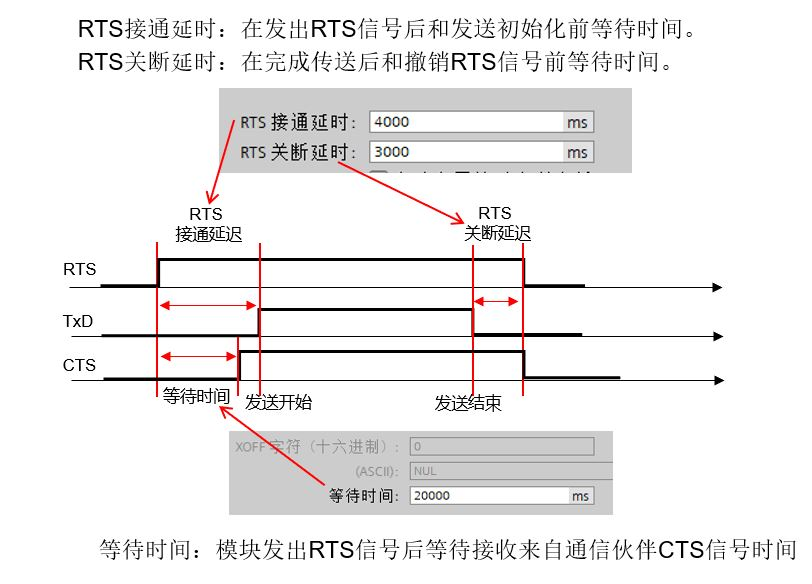
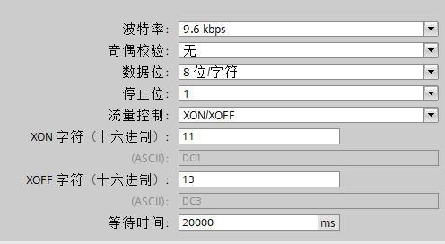
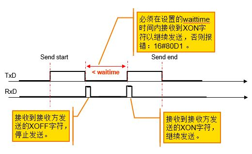

流控是在通信过程中，为了防止数据丢失而采取的一种平衡发送和接收的机制。流控可以确保发送设备发送的信息量不会超过接收设备所能处理的信息量。流控有两种实现方式，即硬件流控和软件流控
 注意：
注意：
硬件流控制通过请求发送 (RTS, Request To Send) 和允许发送 (CTS, Clear To Send) 通信信号来实现。 对于 RS232 CM1241，RTS 信号从引脚 7 输出，而 CTS 信号通过引脚 8 接收。
CM 1241 RS232通信模块支持三种硬件流控模式：

图1 流控模式

图2 RTS 始终打开设置
CM1241 模块在发送数据之前，首先会激活本模块的 RTS 信号，随后开始监控CTS管脚的电平状态，判断接收设备是否已经准备好接收数据。当 CTS 变为有效信号后，CM1241 模块开始发送数据。在数据传输过程中 CTS 信号必须一直保持有效，如果 CTS 信号变为无效，CM1241 模块立即停止发送。
RTS 信号被激活后，如果在指定的等待时间内 CTS 信号没有被激活，CM1241 模块会终止数据传送并返回错误到用户程序。
一些通信设备（例如电话调试解调器）监控 RTS 信号并将其作为允许发送信号，仅在 RTS 处于激活状态时才向 CM1241 模块发送数据。如果 RTS 处于非激活状态，则不向 CM1241 模块发送数据。与这类设备通信时，需要在 S7-1200 设备组态中选择“RTS始终启用”。
 注意：选择“RTS 始终启用”后，CM1241 会将 RTS 信号一直激活，即使CM模块已无法接收字符，RTS 信号也不会复位，因此与 CM1241 通信的设备必须确保一次发送的数据量小于 CM 模块接收缓冲区的大小（每个 CM 模板的接收缓冲区为1KB）。
注意：选择“RTS 始终启用”后，CM1241 会将 RTS 信号一直激活，即使CM模块已无法接收字符，RTS 信号也不会复位，因此与 CM1241 通信的设备必须确保一次发送的数据量小于 CM 模块接收缓冲区的大小（每个 CM 模板的接收缓冲区为1KB）。
选择上述1、2两种硬件流控方式的任何一种，CM1241 模块都会激活数据终端就绪（DTR）信号，即通信口 4 号管脚。只有当据设备就绪（DSR）信号被激活时，CM 模块开始发送数据，在数据传送过程中，如果DSR变为非激活状态，CM 模块暂停数据传送。CM1241 模块仅在发送数据时监控 DSR 信号状态。
选择“RTS 始终启用 忽略DSR”后，只需要接2根线RTS和CTS，不需要DSR和DTR信号，其他和“RTS始终启用”一样。
软件流控是指在消息帧中使用特殊字符来实现流通量控制，不需要接控制线，发送方只需要在硬件组态中设置 XON/XOFF 字符；而接收方通过发送 XON/XOFF 字符给发送方即可实现数据传输控制。

图3 软件流控组态

图4.软件流控通讯
当通信一方不能继续接收数据时，会发送一个 XOFF 字符到通信的另一方，告诉另一方停止发送数据；当通信可以恢复时，该方会再发送一个 XON 字符到另一方，告诉对方继续发送数据。如果 CM1241 模块在指定的时间内没有等待到 XON 字符，则终止数据传输并返回错误到用户程序。
 注意：在通信数据中，不得包含 XON 和 XOFF 字符
注意：在通信数据中，不得包含 XON 和 XOFF 字符